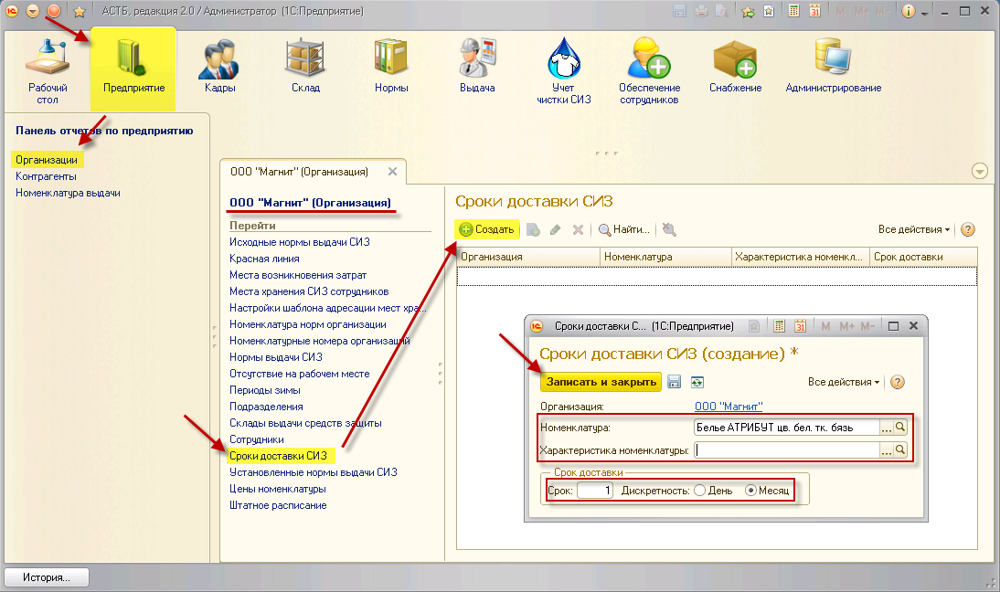

Для формирования заказа необходимо заранее указать сроки доставки СИЗ. В зависимости от срока доставки программа подбирает, на какой месяц делается заказ поставщику: если делать анализ заявок на заказ поставщику в марте, а в справочнике установлено, что доставка осуществляется через месяц, то при анализе так же включатся заявки, созданные на апрель.
Для заполнения справочника необходимо зайти в раздел «Предприятие», справочник «Организации». Двойным нажатием выберите нужную организацию, а затем – пункт «Сроки доставки СИЗ». Нажмите кнопку «Создать», в открывшемся окне выберите номенклатуру, ее характеристику и проставьте срок доставки. Для выбранной номенклатуры и ее характеристики будет осуществляться контроль срока доставки. Если характеристику не указывать, сроки доставки будут установлены для всех размеров выбранной номенклатуры.

Примечание: если не указывать номенклатуру и ее характеристики, то срок доставки будет учитываться для всех позиций в номенклатуре норм организации.